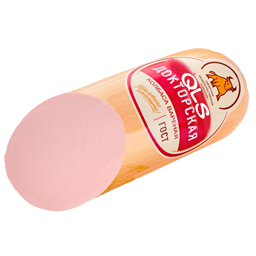

Докторская колбаса
Единственный предмет ветки без единого рецепта: колбасу нельзя скрафтить, выплавить или найти в сундуке — только выменять у жителя. Гостевой пункт Мистера Б, отдел колбасных изделий.

Плотность по стандарту
Питательность — как у приготовленного мяса: десять единиц голода одним использованием и высокий модификатор насыщения. Пометка «мясо» разрешает кормить волков.
Одно использование восстанавливает 10 единиц: пять целых иконок голода.
Один изумруд — одна колбаса
Предложение добавляется на первый уровень «Новичок» каждому жителю с профессией. Выбери, к кому идёшь: прилавок повторяет условия оригинальной сделки.
 →
12
0
→
12
0
КНИГА ЖУРНАЛА ПРИЛАВКА
Кто именно торгует
Любой житель с профессией — от бронника до оружейника. Умышленно исключены двое: безработный (профессия ещё не выдана) и нищий, которому профессию не выдают вовсе.
Точные параметры сделки
BasicItemListing: цена — 1 изумруд, товар — 1 колбаса, до 16 использований, 1 очко опыта жителю за покупку, множитель цены 0.05.
Почему нельзя скрафтить
У предмета нет записи ни в одной таблице рецептов мода. Колбаса появляется в мире только через торговое окно — потому и ценится.
Заметки гостя
ЧЕК №0001 · ГАСТРОНОМ №1
Стенд-цель гостя Б учитывается в профиле и стоит в общем древе ачивок — наравне с линейкой 1–29.
Ветка Мистера Б в древе
В папке 00_guest мода у гостя Б ровно одна ачивка — «ГОСТ», скрытая до получения, как в игре. Она же открывает ветку в общем древе достижений.